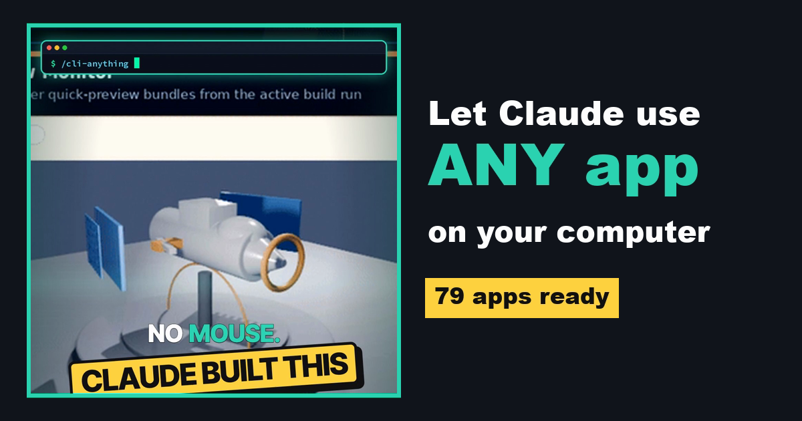

From the reel · AI agents
Let Claude use any app on your computer.
CLI-Anything gives desktop apps like Blender, GIMP, OBS and Zoom a set of text commands, so Claude Code and other agents can drive them by just being asked. Here is how to install it and what to try first.

Apps are built for clicking.
Agents are built for commands.
Most desktop software expects a person with a mouse. AI agents are much better at typing commands, so they get stuck in normal app windows. CLI-Anything, from the Data Intelligence Lab at the University of Hong Kong (HKUDS), wraps each app in a command-line interface the agent can call directly.
On 10 October 2026 the repo had 51,788 stars, an Apache-2.0 license, and 79 ready-made app CLIs in its hub.
Real demo from the repo
An agent building a drone in Blender.
Install
Three ways in. Start with the first.
Install the hub, then add an app
Needs Python 3.10+. Each CLI drives the real app, so install the app itself too (for example GIMP or Blender).
pip install cli-anything-hub # browse the 79 apps cli-hub list cli-hub search image # install one and try it cli-hub install gimp cli-hub info gimp cli-hub launch gimp
Give Claude Code the hub skill
This installs a skill that lets Claude Code (and Codex and other skill-compatible agents) search the hub and install the CLI it needs for a task.
npx skills add HKUDS/CLI-Anything --skill cli-hub-meta-skill -g -y
Build a CLI from the app's code
Run these inside Claude Code. The plugin reads the app's source and runs a 7-phase generator that writes the CLI and its tests. It works best on open-source apps.
/plugin marketplace add HKUDS/CLI-Anything /plugin install cli-anything # point it at the app's source folder or repo /cli-anything ./gimp
First task
Try one small, safe job.
Pick an app you own
GIMP, Blender, LibreOffice, OBS, Audacity, Obsidian, Inkscape, Krita, FreeCAD, Zoom, draw.io and more are in the hub.
Work on a copy
Point it at a test folder or a copy of a file, not your only original.
Read before you approve
Claude Code shows each command first. Approve only what you understand.
Use CLI-Anything to work with GIMP. First check whether the GIMP CLI is installed (install it with cli-hub if it isn't). Then take ./test-images/photo.jpg, resize it to 1080x1920, add a 20px white border, and export it as ./test-images/photo-story.png. Show me each command before you run it, and do not touch any other files.
Swap GIMP and the file paths for your own app and test files.
Good to know
The limits, in plain words.
The real app stays installed
CLI-Anything calls the actual software. If Blender isn't on your machine, the Blender CLI can't do anything.
Open source works best
Building a new CLI means reading the app's code, so closed apps are much harder or impossible.
Free tool, paid brain
The repo is free under Apache-2.0. The agent you use with it, like Claude Code, still needs its own plan or API key.
Came here from the Reel?
Here is your APPS link.
You commented APPS for this page. Start with path 01, install one app you already use, and give Claude the starter prompt.